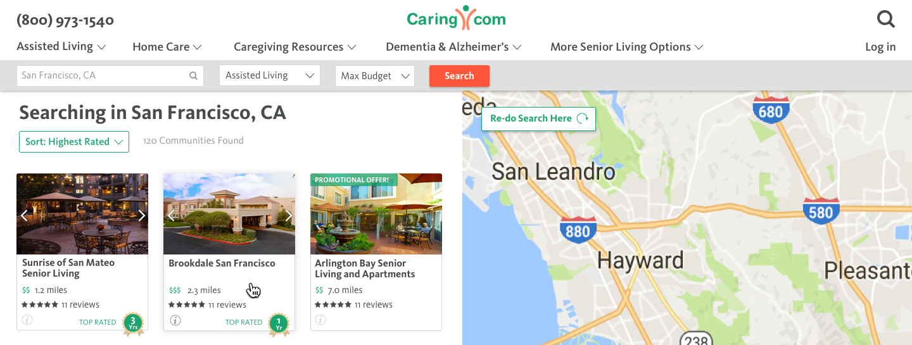

04 CONTACT
Say Hello
Have a cool project? Want to get in contact or just want to say hello? Drop me a line.
Search is an important element in how we help our customers. We provide a robust online directory full of information that users can use to find the senior care or support that they need.

How can we simplify the search flow to include as few steps as possible and create a better experience?
To significantly increase engagement, qualitative usability, and conversion on the search results pages.
For more context, read a bit about Company XYZ
The first version of Search was built entirely off of SEO logic and acted as individual landing pages instead of a complete flow. Because of this, search results did not provide enough information about communities for the user to decide which ones were interesting. They gave the user too many choices to evaluate with no method of trimming them down. They also didn't take into account the user's current level of knowledge about senior care. The result was low engagement and high bounce rates.
Our goal was to explore ways we could help the user with a better search experience. We measured this by tracking engagement, conversion and qualitative usability. Along the way, we focused on questions like, "does the user get results without mental exertion?" "Does the user have a list of communities they want to explore beyond the website?"
This is what the search experience looked like before:
The search results page before I joined. Very little valuable information is shown about the communities listed.
The flow didn't make sense to me.
The user's main concerns when searching for senior care are distance, price, rating, and photos. The search results didn't give the user the information they needed to be able to know which community to click on. Instead they were given an overwhelming amount of text that added cognitive load for no reason.
The user had to go back and forth between the community page and search results page to find a community that would work with their basic needs. I felt that they were doing too much work.
We wanted the user to land on the search page and immediately feel like they would be able to find what they were looking for. I removed all unnecessary information and focused on distance, price, rating and images - the main things needed for the user to be able to compare communities and click on one that interests them. I borrowed the map and list concept from Zillow and VRBO, two sites that our users are familiar with.

My design for the new search results page. The redesign was also part of a larger project to switch our website over to new design styles.
Now that Search was developing into a prominent part of our online offering, I realized that there were now two search experiences that the top nav had to accomodate: Searching content on our website like articles and resources, and searching for senior care. On a page outside of search (ie. article page, homepage, topic page) the user needed a way to navigate to our search tool.

I researched the behavior of users on our website and drew out storyboards of how they used our website so that I could integrate the two searches in a distinct manner. The following are some different explorations in how we could have done this.

While option 3 and 4 both seemed like viable solutions, I ended up going with 3 since it was the most explicit. With option 4, they could click the search icon expecting to go back to the search tool and feel frustrated if it didn't take them there. With option 3, we are able to catch all users looking to search and funnel them in the right direction. I'm not particularly happy with this solution, but I've decided to use this for our soft launch and gather some data before exploring other options.
When you're designing for an older demographic, translating a desktop experience to mobile can be really tricky. You have to make sure your targets are large enough that users won't have a hard time clicking on them. You also have to pare information down to the bare minimum since space shrinks but fonts have to stay large.
Research behind search behaviors on mobile and desktop showed that more users were on mobile to just browse or look up specific communities, while users on desktop tended to be deep in search mode. For that reason, we decided to drop the map from mobile for v1. This would save us 3-4 days in engineering work and QA and allow us to launch quickly and get data. We set up trackers for map usage and decided that if it seemed valuable enough, we would implement this in later versions.

Our region pages are SEO pages that contain the same content as our search pages, but with more information about the region. They are designed to increase our rank on Google. For consistency, we needed to change the region pages to match the new search page. But region pages are static and search is dynamic, so the change wasn't as easy as we thought it would be.

You can see the full page here.
In Search, whenever the user moves the map, the search refreshes and the results change for each new location. However, our Region pages have unique information about the initial search location. We couldn't just change the information to show the new region the user moved to since they could be inbetween regions, super zoomed out, or in an area with no region (like the ocean).
My first reaction was to get rid of the map and just have our Region pages be content focused. However, the transition from Region pages to the Search page was jarring and created friction for the user. So I planned out other alternatives and landed on a "redo search here" button. Clicking that button would transition the user to Search and off of our Region pages, even though the user would feel like that same page was just refreshing.
Have a cool project? Want to get in contact or just want to say hello? Drop me a line.